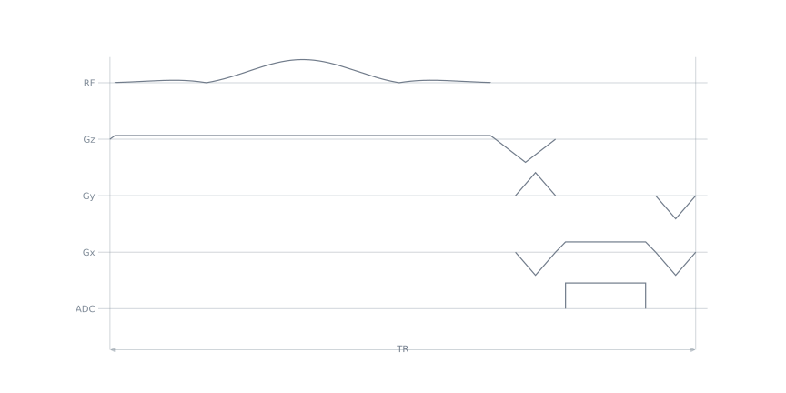
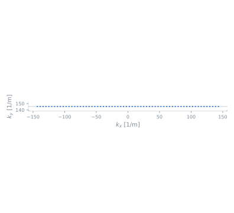

LineReadout2D#
- class pypulseqpp.sequences.LineReadout2D[source]#
Bases:
SequenceModuleOne Cartesian line, frequency-encoded along x and phase-encoded along y.
fovandmatrixtake two values here, readout first.An excitation gives a gradient echo; a refocusing pulse gives the readout half of a spin echo. Phase encodes are templates at their largest step, for the loop to scale per shot.
Zero spoiling balances every axis. Positive spoiling after the acquisition gives SSFP-FID, before it SSFP-Echo. In the latter case the FID trajectory reported by
calculate_kspaceneed not cross k = 0;echo_timeis still the timing interval.- Parameters:
system (pypulseqpp.Opts) – System limits.
rf (RfEvent) – The pulse that opens the repetition.
gz (GradEvent, default=None) – A selection gradient played in the same block as
rf. Pass an excitation’sgz, or nothing for a hard pulse.gz_reph (GradEvent, default=None) – The rephaser that unwinds
gz, left-aligned in the first block after the pulse: the TE wait when there is one, the prewinder block otherwise. A slab excitation (is_slab=True) has already merged it intogzand passes nothing.fov (float or sequence of float) – Field of view (m), per encoded axis, readout first.
matrix (int or sequence of int) – Matrix size per encoded axis, used to set gradient areas. The scan loop controls the number and order of acquired lines.
te (float, default=None) – Echo time (s), from the RF isodelay to the first echo.
Noneis as short as possible.tr (float, default=None) – Repetition time (s), over the whole module.
Noneis as short as possible.partial_echo (float, default=1.0) – Fraction of the full echo acquired, in
(0.5, 1]. Truncates the samples before the echo, so it shortens TE.oversampling (float, default=1.0) – Readout oversampling:
delta_kxshrinks and the sampled field of view grows, while resolution is fixed byfovandmatrix.readout_bandwidth_hz (float, default=250000.0) – Requested ADC sampling rate (Hz).
bandwidth_hzreports the achieved rate, subject to both ADC and gradient raster constraints.spoiling_cycles (float, default=0.0) – Residual dephasing left at the end of the TR, in cycles across
voxel_size_m. Zero is balanced.voxel_size_m (float, default=None) – Length the spoiling is counted over (m). Defaults to the readout resolution.
spoiling_position ({'post', 'pre'}, default='post') – Side of the acquisition on which the dephasing lobe is played.
n_echoes (int, default=1) – Echoes per repetition.
flyback (bool, default=True) – With more than one echo: rewind between echoes so every one is read in the same direction (monopolar, the default), or alternate the readout sign (bipolar), which is faster but reads even echoes backwards and puts any gradient-delay error into a phase difference between them. A bipolar train needs as many samples before the echo as after it, so partial echo and an odd sample count are rejected.
echo_spacing (float, default=None) – Echo spacing (s).
Noneis as short as possible: the readout lobe of a bipolar train, the lobe and its rewinder for a monopolar one. Ignored with one echo.wave ({'phase', 'partition', 'both'}, default=None) – Wave-CAIPI encoding under the readout flat top: a sine on y, a cosine on z, or both. 3D only, unless
wave_cyclesorwave_amplitudeis zero, which builds no wave-encoding gradients.wave_cycles (int, default=8) – Wave periods across the sampling window.
wave_amplitude (float, default=0.008) – Requested peak wave-encoding gradient amplitude, in T/m rather than the Hz/m used elsewhere. A ceiling: the slew rate may lower it, and the module’s
wave_amplitudeattribute reports the amplitude built.labels (sequence of str, default=None) – Counters emitted on the acquisition block. The acquisition loop assigns their values.
trigger (event, default=None) – A trigger or digital output armed on the prewinder block.
- Attributes:
rf (RfEvent) – The pulse the module was given.
gz (GradEvent) – Its selection gradient, if one was given.
gz_reph (GradEvent) – Its rephaser, if one was given, left-aligned in whichever block follows the pulse.
gx_pre (GradEvent) – Readout prephaser, right-aligned in the prewinder block. Includes the spoiler area under
spoiling_position='pre'.gx (GradEvent) – Readout lobe. A spoiler is bridged onto it when there is one echo: the lobe then lacks the ramp on the spoiler’s side, which
gx_preorgx_spoilplays instead. Where the spoiler is bridged onto the end, the plateau is held to the end of the acquisition block, past the last sample by the ADC dead time, so that the spoiler starts at the plateau amplitude;gx_spoilhas correspondingly less area.gx_spoil (GradEvent) – Last read-axis gradient of the TR: rewinds the part of the line after the echo and, under
spoiling_position='post', adds the spoiler. Left-aligned withgy_rew.gy_pre, gz_pre (TrapEvent) – Phase encodes at their largest step, to be scaled per shot.
gz_preis 3D only.gy_rew, gz_rew (TrapEvent) – The negated encodes that unwind them, for a balanced TR.
gx_flyback (TrapEvent) – Rewinder played after every echo but the last of a monopolar train.
gx_rev (GradEvent) – The negated lobe that reads the even echoes of a bipolar train.
gy_wave, gz_wave (GradEvent) – Wave-encoding gradients played under the readout flat top, each self-balanced so scaling one to zero changes nothing else. Only the channels
wavedrives.adc (AdcEvent) – The acquisition window, shared by every echo.
adc_labels (LabelSetEvent or list of LabelSetEvent) – One per name in
labels, in order. Absent whenlabelsis empty, and a bare event rather than a list when there is one.wait_te (DelayEvent) – Present only when a TE longer than the minimum was asked for and the wait can hold
gz_reph; otherwise the prewinder block starts later.wait_esp (DelayEvent) – Present only when an echo spacing longer than the minimum was asked for. Played after every echo but the last: after the readout lobe of a bipolar train, after the rewinder of a monopolar one.
wait_tr (DelayEvent) – Present only when a TR longer than the minimum was asked for.
echo_time (float) – From the RF isodelay to the first echo (s), on the block raster.
echo_spacing (float) – Between successive echoes (s), on the block raster; zero with one echo.
center_sample (int) – Index of the sample at the echo; partial echo moves it toward the start.
wave_amplitude (float) – Peak wave-encoding gradient amplitude built, in T/m, below the requested one where the slew rate binds; zero without
wave.
- Raises:
ValueError – If a count or a fraction is out of range,
wavenames no wave mode or would build wave-encoding gradients on a 2D readout,gz_rephshares a channel with an encoded axis, or the requested TE, TR or echo spacing is shorter than the module can achieve.
Examples
>>> import pypulseqpp.sequences as design >>> import pypulseqpp as pp >>> system = pp.Opts() >>> excitation = design.SpatialSelectiveExcitation(system, 15.0, 5e-3) >>> readout = design.LineReadout2D( ... system, excitation.rf, excitation.gz, excitation.gz_reph, ... fov=0.22, matrix=128, ... ) >>> int(readout.adc.num_samples) 128
>>> readout.blocks[1] == (readout.gx_pre, readout.gy_pre, readout.gz_reph) True


Methods
Build the module's block layout; implemented by the subclass. |
|
Publish events from the caller's locals and register keyword aliases. |
|
Publish named events without requiring prior block registration. |
Attributes
Return block tuples in play order, retaining the original event objects. |
|
Duration of the module in seconds. |
|
Sequence holding the module's construction-time block layout. |


{kind=link}
{kind=link}